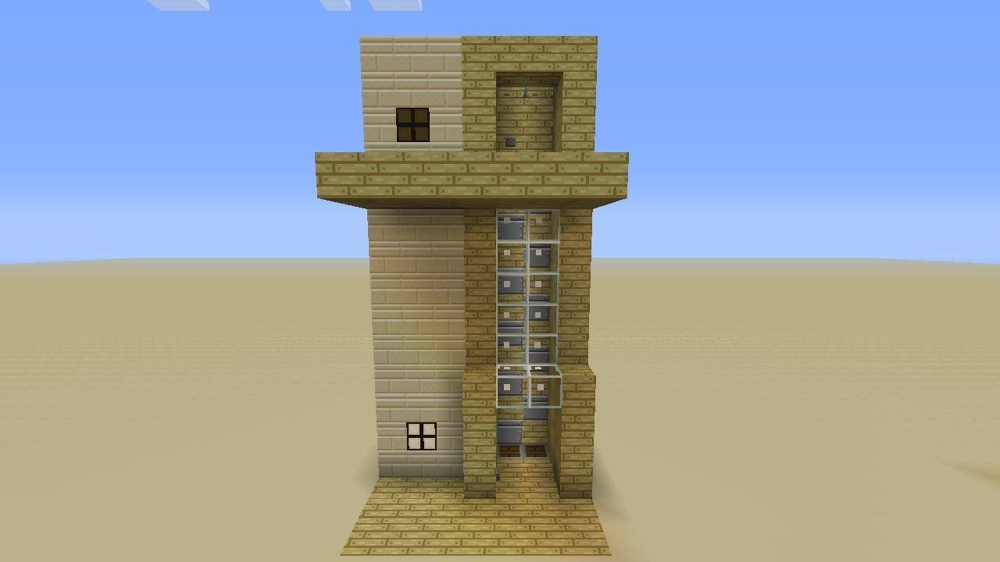
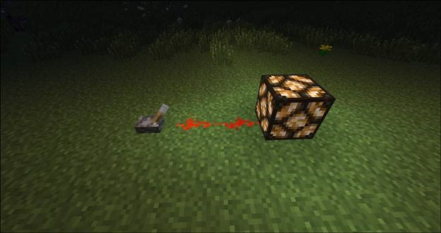

GETTING STARTED
Types of Elaborate Devices?
Comparators
Comparators are where you start to get the sense that you might just be working your way through an electrical engineering degree.
Comparators are used to compare signals, subtract signals, and to measure containers.
A very simple example of a comparator in action would be that of an alert light attached to a collection container. Let’s say you
added a hopper and chest to that mob farm we were just talking about. What if the chest filled up and you weren’t there to empty it?
You’d lose all the future loot as it wouldn’t be collected in the chest. You could set up a redstone circuit with a comparator that,
when the chest was partially full, turns a light on outside the mob farm so you know to go empty the chest. Heres a video explaining how
comparators work
Examples of Simple Redstone Constructions
Talking about the individual components is all well and good, but it helps to see some examples to get a sense of context. Let’s take a look at a few simple examples of redstone circuits to highlight what can be done with it.Here’s the most simple of constructions and one that will be readily familiar to even those of us without electrical engineering degrees:

The good old switch and light setup: you flick the switch and the light toggles its state. By building on that simple concept and adding in additional wiring, delays, and other mechanisms like pistons, you can really enhance your abilities in the game and save a lot of time in the process.
« Previous Next »